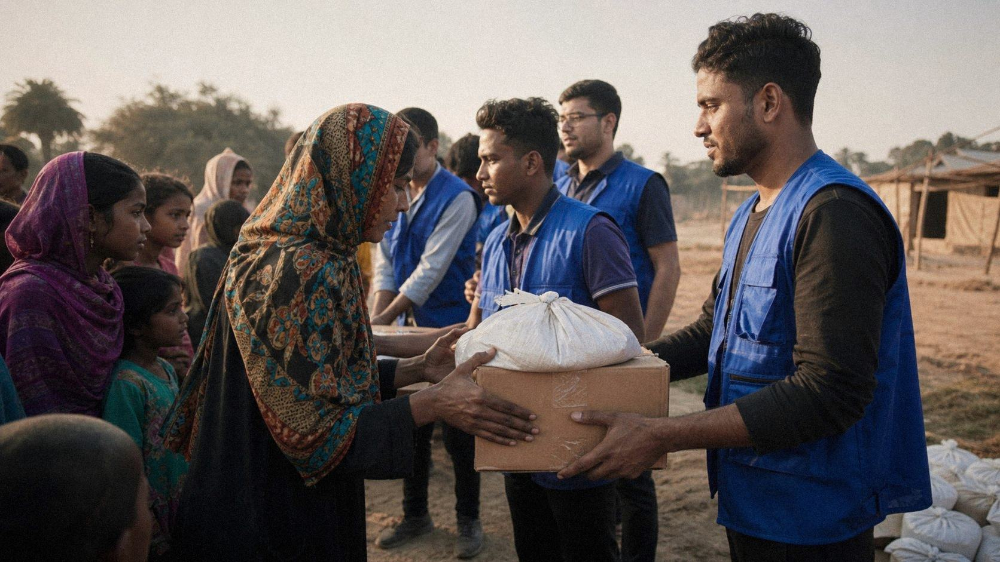
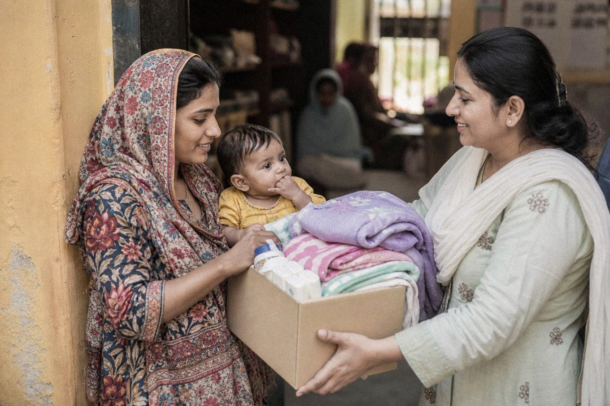

Food & Essential Support
6,250 parcels · 11 monthly distribution points

Compassion in action. Communities supported. Human dignity respected.
DonateCumulative figures, March 2024 – September 2026 · verified in our 2025 Annual Report
Mankind First Foundation exists to put people at the center of humanitarian action — supporting dignity, opportunity and practical help for people and communities facing hardship.
Founded in Multan in 2024, we work across South Punjab side by side with local communities — delivering food support, education, healthcare, clean water and emergency relief with one rule above all: help must never cost a person their dignity.
 Community-led change in Khanewal — planted, watered and owned by the street itself.
Community-led change in Khanewal — planted, watered and owned by the street itself.
Eight program areas covering the essentials of a dignified life — each one active, locally staffed and reported openly.

Behind every food box, notebook and health check is a simple idea: help should strengthen people, never diminish them.
210 volunteers already power our work — teachers, nurses, students, drivers, designers. Orientation runs every first Saturday at our Multan office.
That’s the average cost of one food parcel — flour, oil, lentils, tea, spices and vegetables for a household of five. Give once or monthly, through GoFundMe or local bank transfer.